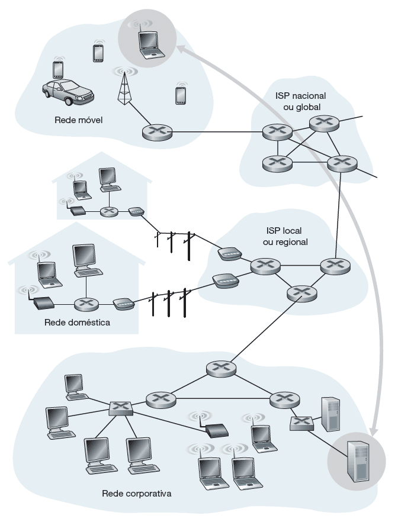

O entorno da internet
A borda da rede
Confira agora os principais pontos sobre a borda da rede.
Os dispositivos que utilizamos e que estão conectados à internet são chamados de sistemas finais, ou hosts (hospedeiros), pois se encontram no entorno, ou periferia, da internet e são nesses dispositivos que executamos as aplicações de rede.
De uma forma geral, eles podem ser divididos em duas grandes categorias:
- Clientes
São os desktops, notebooks, smartphones e tablets, dispositivos que, normalmente, estão de posse de algum usuário. - Servidores
São as máquinas mais poderosas, que armazenam e distribuem páginas web, vídeo em tempo real, retransmissão de e-mails etc.
Sobre os servidores, é comum chamarmos de máquinas grandes, poderosas, mas, na realidade, o que define a máquina ser servidora não é o hardware, e sim o software executado por ela. Como o nome diz, o servidor será o dispositivo que contém o software, servindo alguma coisa ou algum serviço para um cliente que faz um pedido ou requisição.
A imagem a seguir ilustra a localização dos sistemas finais em uma infraestrutura de redes de computadores. Confira!

Interação entre sistemas finais.